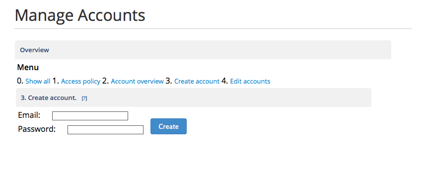
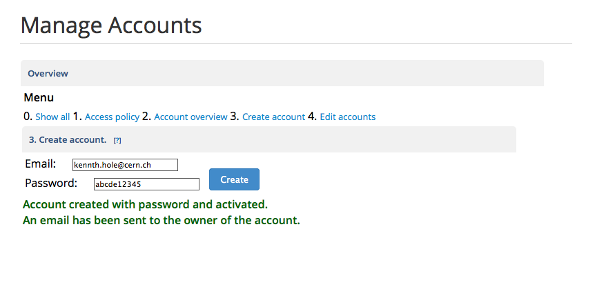
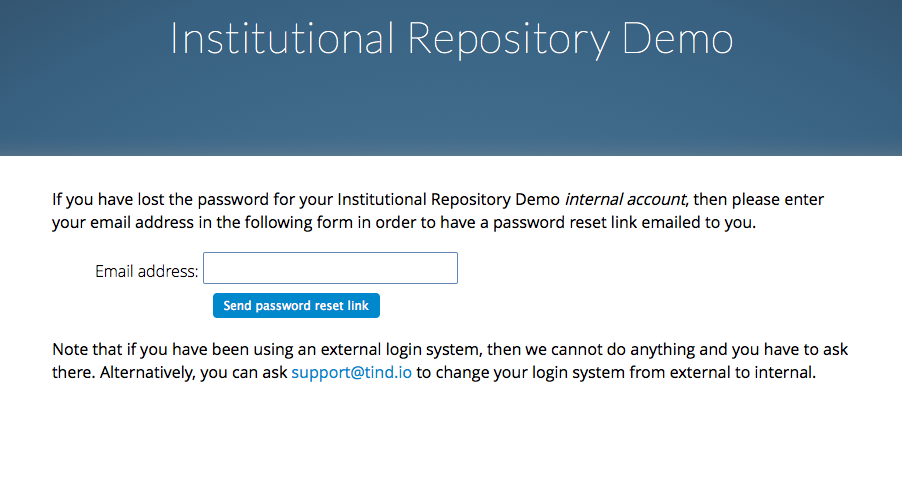
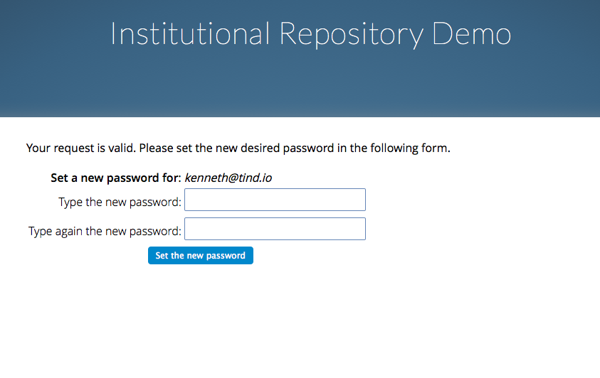

Add New Users¶
1. Introduction¶
This guide is meant for organizations that do not use a single log in method and would like to create local accounts.
There are different ways of creating new users, dependent of your configuration settings of who are allowed to create users.
# CFG_ACCESS_CONTROL_LEVEL_ACCOUNTS -- account registration and
# activation policy. When 0, users can register and accounts are
# automatically activated. When 1, users can register but admin must
# activate the accounts. When 2, users cannot register nor update
# their email address, only admin can register accounts. When 3,
# users cannot register nor update email address nor password, only
# admin can register accounts. When 4, the same as 3 applies, nor
# user cannot change his login method. When 5, then the same as 4
# applies, plus info about how to get an account is hidden from the
# login page.
2. Create new users in WebAccess¶
First select “Manage Accounts Area” on the front page of the WebAccess admin panel. Select point three from the menu bar “Create Account”.
A new box appear where you can add the username and password for the person.

Upon creation, an email are sent to the person to inform that a new user is created. The password are not displayed in the email. We therefore recommend to have the person to change his/her own password, see section 3.

3. Change password for new users¶
New users will be notified by email as in the example below.

The password is not shown for security reasons and we therefore recommend that the user go to the website and request a new password.
- Select “Forgot password?”.

- Enter your email address.

- A new email are sent with a link to change the password
4. Set a new password. We recommend to use a password manager or to create “a passphrase” for creating strong passwords.
